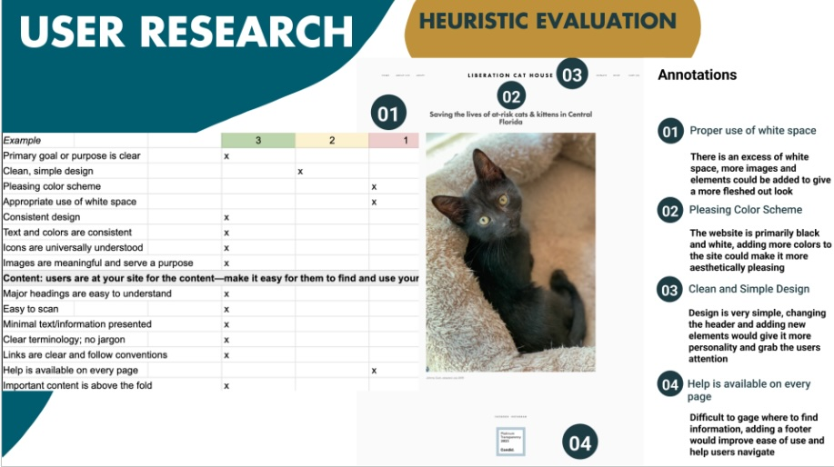
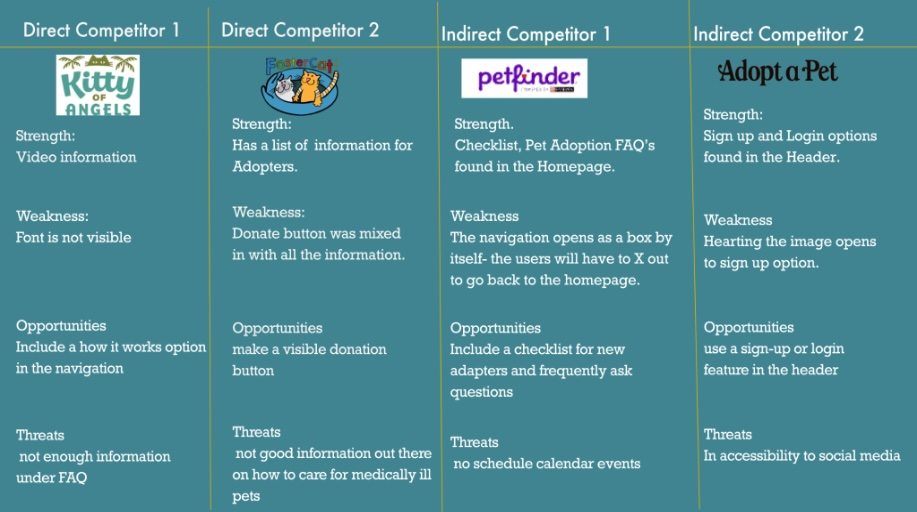
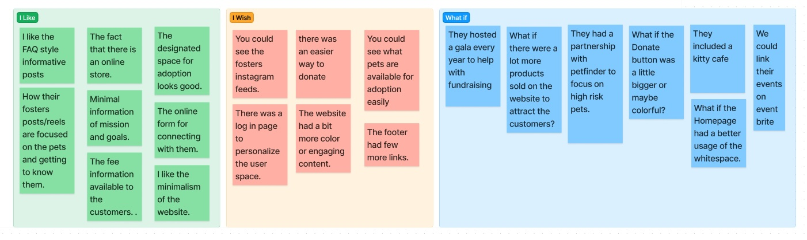
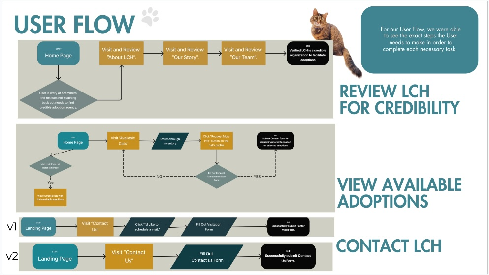
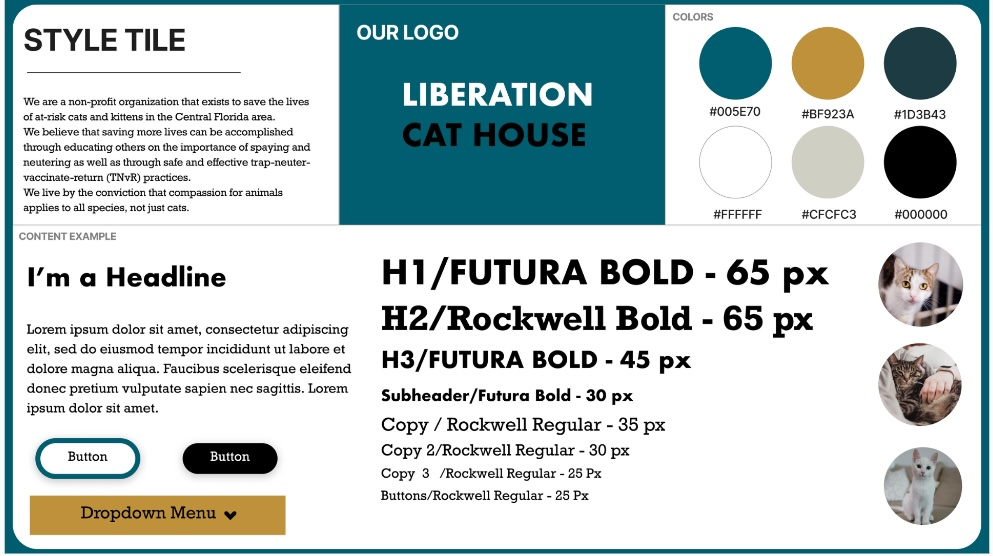
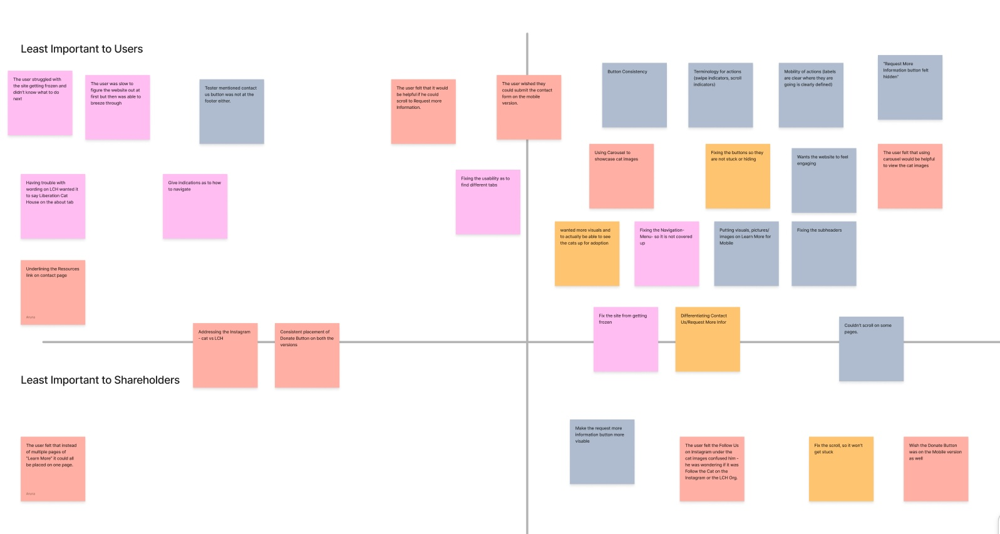
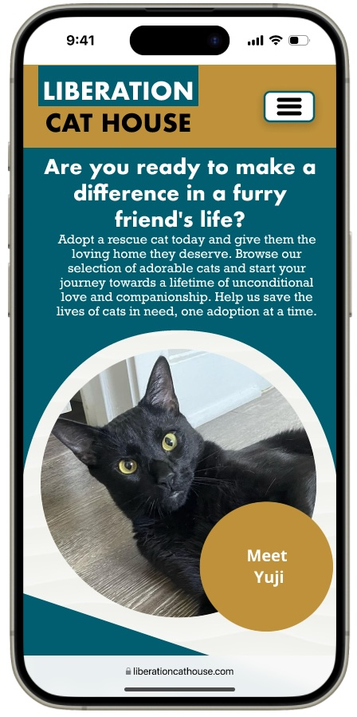
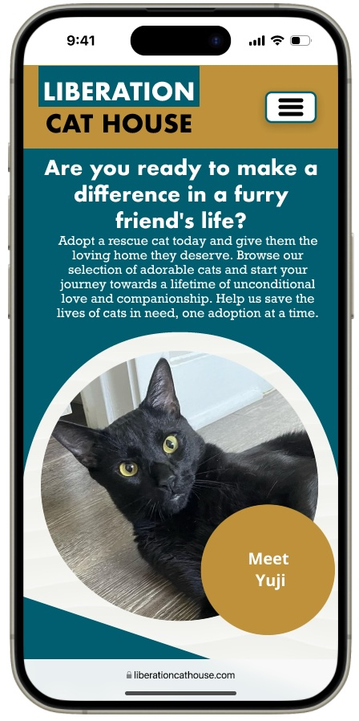

The Problem: Liberation Cat House’s website and social media were inconsistent, causing it to blend in with other rescue groups. The Solution: Designing a website that enables potential adopters to experience improved sustainability that aligns with our digital image ultimately leading to an increase in feline adoptions.
My Role: User Experience & Interface Design, User Research Tools: Figma, Miro, Google Drive, Canva
To better understand how we could more effectively address this problem, we conducted a series of user interviews and surveys. Questions we asked included:Link to key findings from Google survey
Before starting the redesign, I conducted a competitive analysis and compared the websites of other environmentally-related nonprofits to Green Chair Recycling’s current website.
We brainstormed ideas by examining Liberation Cat House's current offerings and identifying ways to highlight their strengths. After analyzing the current offerings, we found several opportunities to enhance the customer experience and expand the range of services.

Next, I conducted a sitemap of the entire website to visualize the information architecture of the site and to get an idea of the amount of content and how the content is grouped User Flow + Storyboard or User Journey Map
This organization currently uses the WordPress template Septera and does not have a developer on their team. Creating a whole new template for the website redesign is useless for the organization if they do not have the expertise and resources to apply it. Therefore, my redesign will utilize the features, characteristics, typography, etc., built into the template so that the team will not need to exert significant additional time and energy learning how to update/edit the website.
After analyzing all my UX research, I created a prototype of the main page while considering the free template's limitations.
User testing Feature Prioritization
 Prototype - Mobile Version

Prototype - Mobile Version

Overall we were very excited to help Liberation Cat House on their revamp of their website. The next steps would be to verify to see if their third partt Application they use can be intergrated into the final design.


©: Copyright 2023